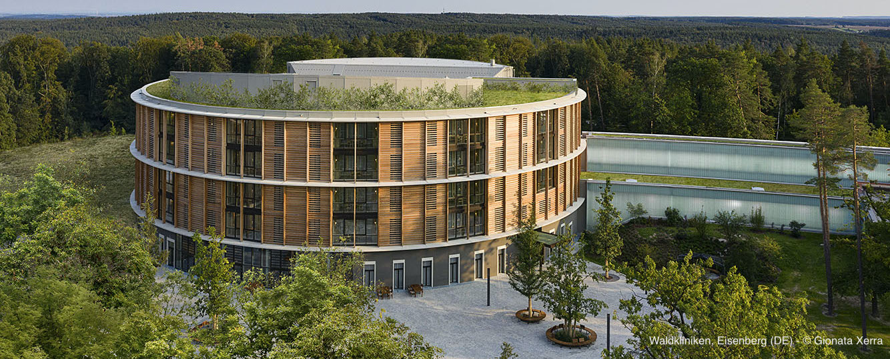
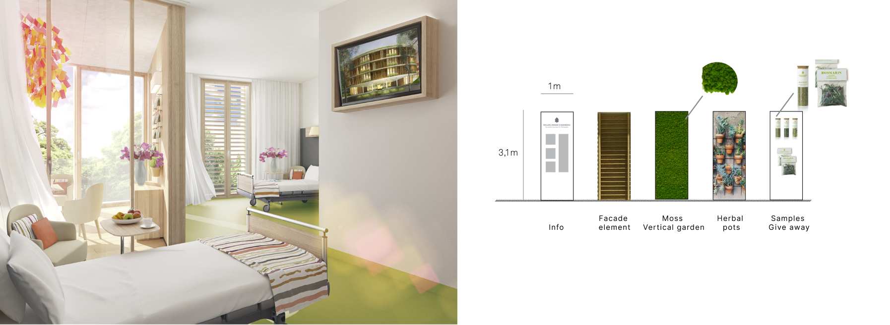
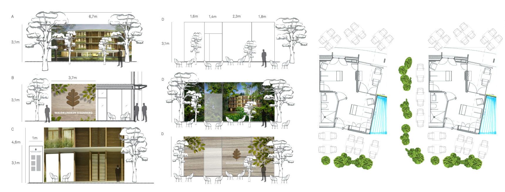
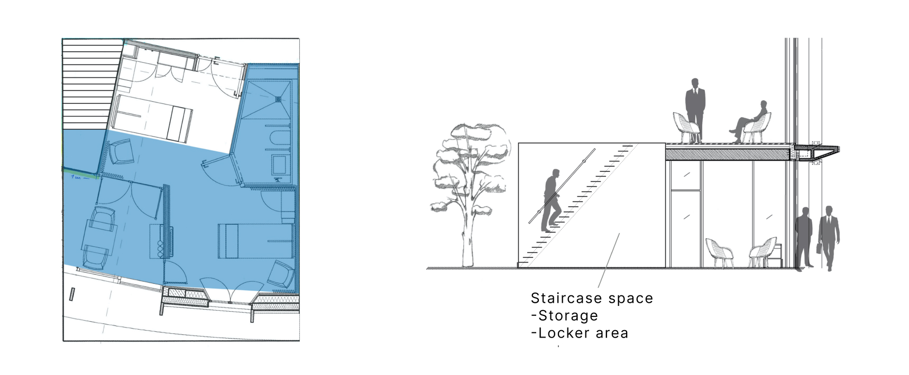

The patient is the guest!

Hotel standard for a municipal hospital: the circular building of Waldkliniken Eisenberg, with its facade made of local wood, will accommodate orthopedic patients after their operations in a building that consciously puts its temporary residents at the center.
The design by architect Matteo Thun has resulted in one of the most innovative and at the same time most sustainable hospital buildings in Europe.
Expo
This project combines innovations in hospitality, healthcare and architecture.
For potential participation in thematic trade shows we have developed a
proactive concept of a demo stand to attract new investors and partners from various sectors before and during the early stages of building construction.
Basic criteria: Communication, interior use, sound, assembly suppliers, customer/catering area, ambient experience.
The half-module of mirrored Z-shaped two-bed rooms perfectly demonstrates to visitors the interior concept,
which offers patients the opportunity to withdraw and enjoy privacy, but also the opportunity to spend time together on the shared veranda.
As part of the exhibition stand, the veranda is a great place for discussion.
The minimal size of the stand is about 70m2.
To speed up and simplify processes, the assembly is shared between the original suppliers and the trade show stand builder.
Inside
To preserve the ambient experience the original room equipment is at the same time a source of information.
Outside
External visual communication for different types of stands: Linear Booth, Corner Booth, Split/Island Booth, Peninsula Booth.
Above

The stand, designed in two levels, enables
to arrange a meeting area behind the façade above the main room.
*In cooperation with Oliver Conrad Studio.